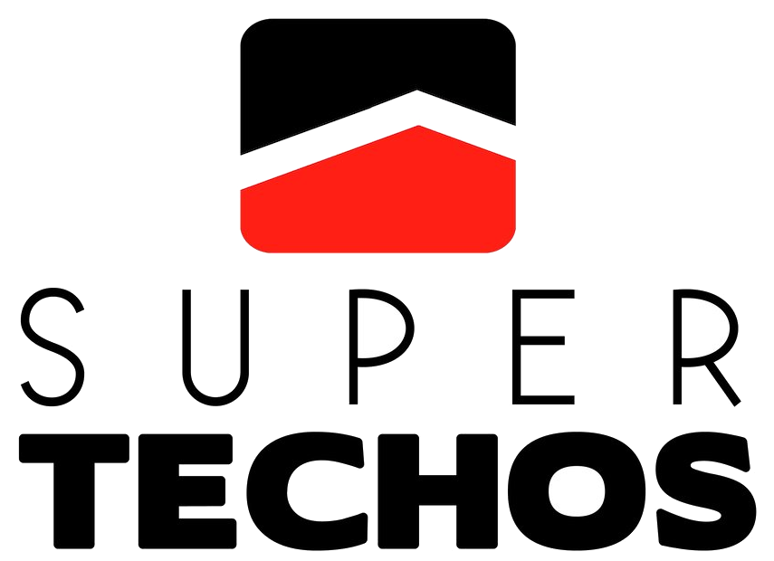

F4 · Placas de escritorio
Tent 250 × 65 mm · un puesto por placa
El formato
Placa tipo tent — se dobla sobre sí misma y se para sola, sin herrajes ni taladros en el mobiliario nuevo. Doble cara idéntica: la de frente para el visitante, la de atrás para que la persona vea su propio puesto al sentarse.
Va en blanco con tipografía negra, no en acrílico negro como los letreros de área. Es el mismo lenguaje de las puertas de cristal (Montserrat negra sobre fondo claro, logos a color) y se sostiene sobre el escritorio de madera clara sin pesar. Los letreros de área son objetos negros montados en muro; las placas son piezas de escritorio — la jerarquía es deliberada.

Anatomía
Troquel y armado
Con sangrado 3 mm ······ 256 × 136 mm
Línea de doblez ········ a 65 mm del borde superior
Cara superior ·········· rotada 180°
Material ··············· acrílico 3 mm blanco
Impresión ·············· UV directa, tinta blanca de base
Texto ·················· convertido a curvas
Marcas de corte ········ sí, fuera del sangrado
La cara superior va rotada 180° para que al doblar sobre el borde ambas lecturas queden derechas. Si el rotulista prefiere PVC 3 mm con vinil impreso y laminado mate, el arte no cambia — solo el sustrato.
Listado de producción
| Nombre en la placa | Puesto |
|---|---|
| Leo Henríquez | por confirmar |
| Ricardo Henríquez | por confirmar |
| Edwin Parra | por confirmar |
| Felvison Calcaño | por confirmar |
| Lily Jaime | por confirmar |
| Yamel Harris | por confirmar |
| Miguel Martínez | por confirmar |
Falta la lista real
En el ERP las columnas puesto y departamento de la tabla
personal están vacías para las 36 personas, así que los cargos no se
pueden sacar de ahí. Estos 7 son los que tienen rol administrativo
(admin / facturas / owner) — pero el plano muestra
más cubículos que eso. Llena placas.csv con nombre y puesto de cada
persona y de ahí salen todas las placas de una vez.